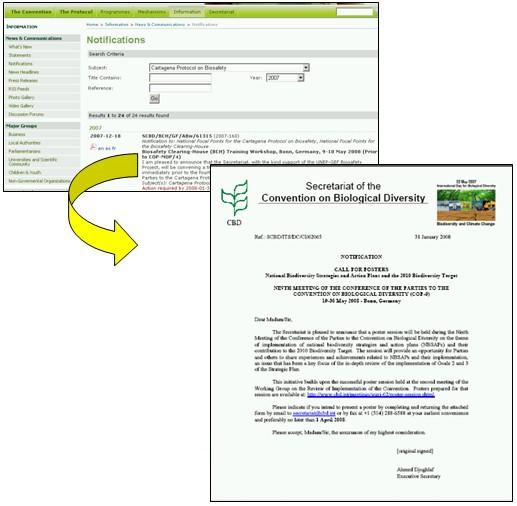

El enlace Notificaciones lleva al usuario hacia una página web que proporciona facilidades de búsqueda para encontrar notificaciones emitidas por la Secretaría de la CBD. Para buscar las notificaciones clasificadas según el Protocolo, seleccione Protocolo de Cartagena sobre Seguridad en la Biotecnología en el menú desplegable en el cuadro Tema, y en lo posible, delimite la búsqueda con una de las palabras del título del documento o el año en que éste fue publicado. De clic en el botón Ir para obtener los resultados de la búsqueda. Si conoce el número de .referencia, el mismo debe ingresarse en el campo “referencia”, y la notificación se desplegará luego de cliquear sobre el botón Ir.

Figura 19